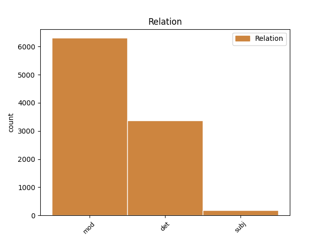
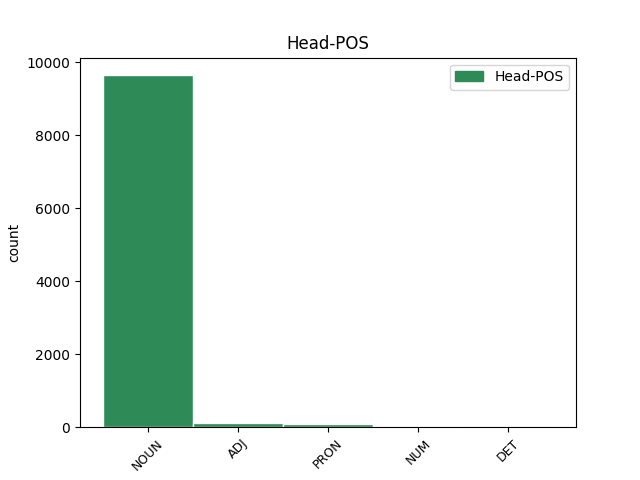
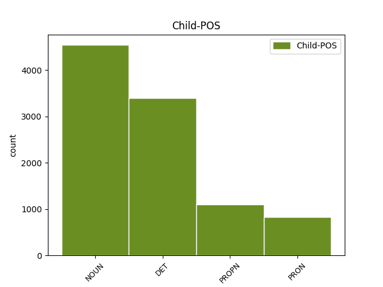

Distribution of features within this leaf



Agreement Rules sorted by frequency.
- When the dependent token is the determiner(det) of the head token, and the head token is NOUN and the dependent token is DET.
1 Wszyscy _ _ _ _ 0 _ _ _
2 podzielamy _ _ _ _ 0 _ _ _
3 tę ten DET adj:sg:acc:f:pos Case=Acc|Gender=Fem|Number=Sing|PronType=Dem 5 det _ _
4 samą _ _ _ _ 0 _ _ _
5 ideę idea NOUN subst:sg:acc:f Case=Acc|Gender=Fem|Number=Sing 0 _ _ _
6 : _ _ _ _ 0 _ _ _
7 mamy _ _ _ _ 0 _ _ _
8 swobodę _ _ _ _ 0 _ _ _
9 przepływu _ _ _ _ 0 _ _ _
10 orzeczeń _ _ _ _ 0 _ _ _
11 sądowych _ _ _ _ 0 _ _ _
12 . _ _ _ _ 0 _ _ _
1 Niniejsza _ _ _ _ 0 _ _ _
2 Umowa _ _ _ _ 0 _ _ _
3 wchodzi _ _ _ _ 0 _ _ _
4 w _ _ _ _ 0 _ _ _
5 życie _ _ _ _ 0 _ _ _
6 pierwszego _ _ _ _ 0 _ _ _
7 dnia dzień NOUN subst:sg:gen:m3 Animacy=Inan|Case=Gen|Gender=Masc|Number=Sing 0 _ _ _
8 miesiąca miesiąc NOUN subst:sg:gen:m3 Animacy=Inan|Case=Gen|Gender=Masc|Number=Sing 7 mod _ _
9 następującego _ _ _ _ 0 _ _ _
10 po _ _ _ _ 0 _ _ _
11 dniu _ _ _ _ 0 _ _ _
12 , _ _ _ _ 0 _ _ _
13 w _ _ _ _ 0 _ _ _
14 którym _ _ _ _ 0 _ _ _
15 Umawiające _ _ _ _ 0 _ _ _
16 się _ _ _ _ 0 _ _ _
17 Strony _ _ _ _ 0 _ _ _
18 notyfikują _ _ _ _ 0 _ _ _
19 wzajemnie _ _ _ _ 0 _ _ _
20 o _ _ _ _ 0 _ _ _
21 zakończeniu _ _ _ _ 0 _ _ _
22 procedur _ _ _ _ 0 _ _ _
23 niezbędnych _ _ _ _ 0 _ _ _
24 do _ _ _ _ 0 _ _ _
25 tego _ _ _ _ 0 _ _ _
26 celu _ _ _ _ 0 _ _ _
27 . _ _ _ _ 0 _ _ _
1 Wyniki _ _ _ _ 0 _ _ _
2 pierwszego _ _ _ _ 0 _ _ _
3 zaproszenia _ _ _ _ 0 _ _ _
4 do _ _ _ _ 0 _ _ _
5 składania _ _ _ _ 0 _ _ _
6 wniosków _ _ _ _ 0 _ _ _
7 w _ _ _ _ 0 _ _ _
8 ramach _ _ _ _ 0 _ _ _
9 sieci sieć NOUN subst:sg:gen:f Case=Gen|Gender=Fem|Number=Sing 0 _ _ _
10 Marie Marie PROPN subst:sg:gen:f Case=Gen|Gender=Fem|Number=Sing 9 mod _ _
11 Curie _ _ _ _ 0 _ _ _
12 kształcenia _ _ _ _ 0 _ _ _
13 początkowego _ _ _ _ 0 _ _ _
1 PRAGNĄC _ _ _ _ 0 _ _ _
2 uzupełnić _ _ _ _ 0 _ _ _
3 postanowienia _ _ _ _ 0 _ _ _
4 zawarte _ _ _ _ 0 _ _ _
5 w _ _ _ _ 0 _ _ _
6 Porozumieniu _ _ _ _ 0 _ _ _
7 EOG _ _ _ _ 0 _ _ _
8 umową _ _ _ _ 0 _ _ _
9 dwustronną _ _ _ _ 0 _ _ _
10 dotyczącą _ _ _ _ 0 _ _ _
11 nawigacji _ _ _ _ 0 _ _ _
12 satelitarnej _ _ _ _ 0 _ _ _
13 w _ _ _ _ 0 _ _ _
14 sprawach _ _ _ _ 0 _ _ _
15 mających _ _ _ _ 0 _ _ _
16 szczególne _ _ _ _ 0 _ _ _
17 znaczenie _ _ _ _ 0 _ _ _
18 dla _ _ _ _ 0 _ _ _
19 Norwegii _ _ _ _ 0 _ _ _
20 , _ _ _ _ 0 _ _ _
21 Wspólnoty _ _ _ _ 0 _ _ _
22 i _ _ _ _ 0 _ _ _
23 jej on PRON ppron3:sg:gen:f:ter:akc:npraep Case=Gen|Gender=Fem|Number=Sing|Person=3|PrepCase=Npr|PronType=Prs|Variant=Long 24 mod _ _
24 państw państwo NOUN subst:pl:gen:n:ncol Case=Gen|Gender=Neut|Number=Plur 0 _ _ _
25 członkowskich _ _ _ _ 0 _ _ _
26 , _ _ _ _ 0 _ _ _
1 I _ _ _ _ 0 _ _ _
2 wplata _ _ _ _ 0 _ _ _
3 się _ _ _ _ 0 _ _ _
4 w _ _ _ _ 0 _ _ _
5 to ten DET adj:sg:acc:n:pos Case=Acc|Gender=Neut|Number=Sing|PronType=Dem 6 det _ _
6 wszystko wszystko PRON subst:sg:acc:n:ncol Case=Acc|Gender=Neut|Number=Sing|PronType=Tot 0 _ _ _
7 uwielbienie _ _ _ _ 0 _ _ _
8 dla _ _ _ _ 0 _ _ _
9 technologii _ _ _ _ 0 _ _ _
10 Pentagonu _ _ _ _ 0 _ _ _
11 . _ _ _ _ 0 _ _ _
1 - _ _ _ _ 0 _ _ _
2 w _ _ _ _ 0 _ _ _
3 rzeźniach _ _ _ _ 0 _ _ _
4 , _ _ _ _ 0 _ _ _
5 w _ _ _ _ 0 _ _ _
6 których _ _ _ _ 0 _ _ _
7 dokonuje _ _ _ _ 0 _ _ _
8 się _ _ _ _ 0 _ _ _
9 tylko _ _ _ _ 0 _ _ _
10 uboju _ _ _ _ 0 _ _ _
11 świń _ _ _ _ 0 _ _ _
12 urodzonych _ _ _ _ 0 _ _ _
13 i _ _ _ _ 0 _ _ _
14 tuczonych _ _ _ _ 0 _ _ _
15 we _ _ _ _ 0 _ _ _
16 własnych _ _ _ _ 0 _ _ _
17 zakładach _ _ _ _ 0 _ _ _
18 hodowlanych _ _ _ _ 0 _ _ _
19 i _ _ _ _ 0 _ _ _
20 które który DET adj:pl:nom:f:pos Case=Nom|Gender=Fem|Number=Plur|PronType=Rel 21 det _ _
21 same sam ADJ adj:pl:nom:f:pos Case=Nom|Degree=Pos|Gender=Fem|Number=Plur 0 _ _ _
22 zajmują _ _ _ _ 0 _ _ _
23 się _ _ _ _ 0 _ _ _
24 rozbiorem _ _ _ _ 0 _ _ _
25 wszystkich _ _ _ _ 0 _ _ _
26 uzyskanych _ _ _ _ 0 _ _ _
27 tusz _ _ _ _ 0 _ _ _
28 . _ _ _ _ 0 _ _ _
1 Dokładny _ _ _ _ 0 _ _ _
2 mechanizm _ _ _ _ 0 _ _ _
3 działania działać NOUN ger:sg:gen:n:imperf:aff Aspect=Imp|Case=Gen|Gender=Neut|Number=Sing|Polarity=Pos|VerbForm=Vnoun 0 _ _ _
4 produktu produkt NOUN subst:sg:gen:m3 Animacy=Inan|Case=Gen|Gender=Masc|Number=Sing 3 subj _ _
5 Rebif _ _ _ _ 0 _ _ _
6 w _ _ _ _ 0 _ _ _
7 stwardnieniu _ _ _ _ 0 _ _ _
8 rozsianym _ _ _ _ 0 _ _ _
9 jest _ _ _ _ 0 _ _ _
10 w _ _ _ _ 0 _ _ _
11 dalszym _ _ _ _ 0 _ _ _
12 ciągu _ _ _ _ 0 _ _ _
13 badany _ _ _ _ 0 _ _ _
14 . _ _ _ _ 0 _ _ _
1 Również _ _ _ _ 0 _ _ _
2 Republika _ _ _ _ 0 _ _ _
3 Federalna _ _ _ _ 0 _ _ _
4 Niemiec _ _ _ _ 0 _ _ _
5 przedstawiła _ _ _ _ 0 _ _ _
6 na _ _ _ _ 0 _ _ _
7 swą _ _ _ _ 0 _ _ _
8 obronę _ _ _ _ 0 _ _ _
9 , _ _ _ _ 0 _ _ _
10 zarówno _ _ _ _ 0 _ _ _
11 w _ _ _ _ 0 _ _ _
12 ramach _ _ _ _ 0 _ _ _
13 postępowania _ _ _ _ 0 _ _ _
14 poprzedzającego _ _ _ _ 0 _ _ _
15 wniesienie _ _ _ _ 0 _ _ _
16 skargi _ _ _ _ 0 _ _ _
17 , _ _ _ _ 0 _ _ _
18 jak _ _ _ _ 0 _ _ _
19 również _ _ _ _ 0 _ _ _
20 w _ _ _ _ 0 _ _ _
21 niniejszym _ _ _ _ 0 _ _ _
22 postępowaniu _ _ _ _ 0 _ _ _
23 , _ _ _ _ 0 _ _ _
24 argumenty _ _ _ _ 0 _ _ _
25 dotyczące _ _ _ _ 0 _ _ _
26 tych ten DET adj:pl:gen:n:pos Case=Gen|Gender=Neut|Number=Plur|PronType=Dem 27 det _ _
27 dwóch dwa NUM num:pl:gen:n:congr:ncol Case=Gen|Gender=Neut|Number=Plur|NumForm=Word 0 _ _ _
28 pojęć _ _ _ _ 0 _ _ _
29 . _ _ _ _ 0 _ _ _
1 Co co PRON subst:sg:nom:n:ncol Case=Nom|Gender=Neut|Number=Sing|PronType=Int 2 subj _ _
2 najważniejsze ważny ADJ adj:sg:nom:n:sup Case=Nom|Degree=Sup|Gender=Neut|Number=Sing 0 _ _ _
3 , _ _ _ _ 0 _ _ _
4 musimy _ _ _ _ 0 _ _ _
5 uzyskać _ _ _ _ 0 _ _ _
6 w _ _ _ _ 0 _ _ _
7 Europie _ _ _ _ 0 _ _ _
8 większe _ _ _ _ 0 _ _ _
9 korzyści _ _ _ _ 0 _ _ _
10 skali _ _ _ _ 0 _ _ _
11 . _ _ _ _ 0 _ _ _
1 Oto _ _ _ _ 0 _ _ _
2 dlaczego _ _ _ _ 0 _ _ _
3 potrzebny potrzebny ADJ adj:sg:nom:m3:pos Animacy=Inan|Case=Nom|Degree=Pos|Gender=Masc|Number=Sing 0 _ _ _
4 nam _ _ _ _ 0 _ _ _
5 plan plan NOUN subst:sg:nom:m3 Animacy=Inan|Case=Nom|Gender=Masc|Number=Sing 3 subj _ _
6 mający _ _ _ _ 0 _ _ _
7 na _ _ _ _ 0 _ _ _
8 celu _ _ _ _ 0 _ _ _
9 koordynację _ _ _ _ 0 _ _ _
10 gospodarek _ _ _ _ 0 _ _ _
11 wszystkich _ _ _ _ 0 _ _ _
12 państw _ _ _ _ 0 _ _ _
13 członkowskich _ _ _ _ 0 _ _ _
14 . _ _ _ _ 0 _ _ _
1 Wciąż _ _ _ _ 0 _ _ _
2 to to PRON subst:sg:nom:n:ncol Case=Nom|Gender=Neut|Number=Sing|PronType=Dem 0 _ _ _
3 samo _ _ _ _ 0 _ _ _
4 , _ _ _ _ 0 _ _ _
5 morderstwa morderstwo NOUN subst:pl:nom:n:ncol Case=Nom|Gender=Neut|Number=Plur 2 mod _ _
6 i _ _ _ _ 0 _ _ _
7 chaos _ _ _ _ 0 _ _ _
8 . _ _ _ _ 0 _ _ _
1 Skonsolidowanie _ _ _ _ 0 _ _ _
2 funkcjonowania funkcjonować NOUN ger:sg:gen:n:imperf:aff Aspect=Imp|Case=Gen|Gender=Neut|Number=Sing|Polarity=Pos|VerbForm=Vnoun 0 _ _ _
3 ESS ESS PROPN subst:sg:gen:n:ncol Case=Gen|Gender=Neut|Number=Sing 2 subj _ _
4 w _ _ _ _ 0 _ _ _
5 pogłębionej _ _ _ _ 0 _ _ _
6 i _ _ _ _ 0 _ _ _
7 rozszerzonej _ _ _ _ 0 _ _ _
8 Europie _ _ _ _ 0 _ _ _
9 . _ _ _ _ 0 _ _ _
1 Porównywanie _ _ _ _ 0 _ _ _
2 informacji _ _ _ _ 0 _ _ _
3 należy _ _ _ _ 0 _ _ _
4 zakończyć _ _ _ _ 0 _ _ _
5 do _ _ _ _ 0 _ _ _
6 dnia _ _ _ _ 0 _ _ _
7 31 _ _ _ _ 0 _ _ _
8 października _ _ _ _ 0 _ _ _
9 każdego każdy DET adj:sg:gen:m3:pos Animacy=Inan|Case=Gen|Gender=Masc|Number=Sing|PronType=Tot 10 mod _ _
10 roku rok NOUN subst:sg:gen:m3 Animacy=Inan|Case=Gen|Gender=Masc|Number=Sing 0 _ _ _
11 . _ _ _ _ 0 _ _ _
1 4.4-litrowy _ _ _ _ 0 _ _ _
2 włoski _ _ _ _ 0 _ _ _
3 V12 V12 PROPN subst:sg:nom:m3 Animacy=Inan|Case=Nom|Gender=Masc|Number=Sing 6 subj _ SpaceAfter=No
4 , _ _ _ _ 0 _ _ _
5 wreszcie _ _ _ _ 0 _ _ _
6 wyzwolony wyzwolony ADJ adj:sg:nom:m3:pos Animacy=Inan|Case=Nom|Degree=Pos|Gender=Masc|Number=Sing 0 _ _ _
7 . _ _ _ _ 0 _ _ _
1 " _ _ _ _ 0 _ _ _
2 To _ _ _ _ 0 _ _ _
3 mój _ _ _ _ 0 _ _ _
4 ? _ _ _ _ 0 _ _ _
5 ! _ _ _ _ 0 _ _ _
6 O _ _ _ _ 0 _ _ _
7 Boże _ _ _ _ 0 _ _ _
8 . _ _ _ _ 0 _ _ _
9 . _ _ _ _ 0 _ _ _
10 . _ _ _ _ 0 _ _ _
11 " _ _ _ _ 0 _ _ _
12 , _ _ _ _ 0 _ _ _
13 i _ _ _ _ 0 _ _ _
14 już _ _ _ _ 0 _ _ _
15 do _ _ _ _ 0 _ _ _
16 nocy _ _ _ _ 0 _ _ _
17 wpatrywał _ _ _ _ 0 _ _ _
18 się _ _ _ _ 0 _ _ _
19 we _ _ _ _ 0 _ _ _
20 własny _ _ _ _ 0 _ _ _
21 mózg _ _ _ _ 0 _ _ _
22 z _ _ _ _ 0 _ _ _
23 czułością _ _ _ _ 0 _ _ _
24 należną _ _ _ _ 0 _ _ _
25 noworodkowi _ _ _ _ 0 _ _ _
26 , _ _ _ _ 0 _ _ _
27 jakby _ _ _ _ 0 _ _ _
28 się _ _ _ _ 0 _ _ _
29 spodziewał _ _ _ _ 0 _ _ _
30 , _ _ _ _ 0 _ _ _
31 że _ _ _ _ 0 _ _ _
32 czyj _ _ _ _ 0 _ _ _
33 jak _ _ _ _ 0 _ _ _
34 czyj _ _ _ _ 0 _ _ _
35 , _ _ _ _ 0 _ _ _
36 ale _ _ _ _ 0 _ _ _
37 jego _ _ _ _ 0 _ _ _
38 mózg _ _ _ _ 0 _ _ _
39 musi _ _ _ _ 0 _ _ _
40 się _ _ _ _ 0 _ _ _
41 różnić _ _ _ _ 0 _ _ _
42 , _ _ _ _ 0 _ _ _
43 bo _ _ _ _ 0 _ _ _
44 sens _ _ _ _ 0 _ _ _
45 jego on PRON ppron3:sg:gen:m1:ter:akc:npraep Animacy=Hum|Case=Gen|Gender=Masc|Number=Sing|Person=3|PrepCase=Npr|PronType=Prs|Variant=Long 46 subj _ _
46 istnienia istnieć NOUN ger:sg:gen:n:imperf:aff Aspect=Imp|Case=Gen|Gender=Neut|Number=Sing|Polarity=Pos|VerbForm=Vnoun 0 _ _ _
47 tkwi _ _ _ _ 0 _ _ _
48 w _ _ _ _ 0 _ _ _
49 różnicy _ _ _ _ 0 _ _ _
50 , _ _ _ _ 0 _ _ _
51 a _ _ _ _ 0 _ _ _
52 kiedy _ _ _ _ 0 _ _ _
53 niczego _ _ _ _ 0 _ _ _
54 nie _ _ _ _ 0 _ _ _
55 znalazł _ _ _ _ 0 _ _ _
56 , _ _ _ _ 0 _ _ _
57 zaczął _ _ _ _ 0 _ _ _
58 kichać _ _ _ _ 0 _ _ _
59 . _ _ _ _ 0 _ _ _
1 Przecież _ _ _ _ 0 _ _ _
2 te ten DET adj:pl:acc:m3:pos Animacy=Inan|Case=Acc|Gender=Masc|Number=Plur|PronType=Dem 3 det _ _
3 kilkaset kilkaset DET num:pl:acc:m3:rec Animacy=Inan|Case=Acc|Gender=Masc|Number=Plur|NumType=Card|PronType=Ind 0 _ _ _
4 głosów _ _ _ _ 0 _ _ _
5 stanu _ _ _ _ 0 _ _ _
6 Floryda _ _ _ _ 0 _ _ _
7 nieubłaganie _ _ _ _ 0 _ _ _
8 absolutyzuje _ _ _ _ 0 _ _ _
9 się _ _ _ _ 0 _ _ _
10 w _ _ _ _ 0 _ _ _
11 świadomości _ _ _ _ 0 _ _ _
12 światowej _ _ _ _ 0 _ _ _
13 opinii _ _ _ _ 0 _ _ _
14 publicznej _ _ _ _ 0 _ _ _
15 w _ _ _ _ 0 _ _ _
16 ten _ _ _ _ 0 _ _ _
17 sposób _ _ _ _ 0 _ _ _
18 , _ _ _ _ 0 _ _ _
19 że _ _ _ _ 0 _ _ _
20 staje _ _ _ _ 0 _ _ _
21 się _ _ _ _ 0 _ _ _
22 reprezentacją _ _ _ _ 0 _ _ _
23 , _ _ _ _ 0 _ _ _
24 a _ _ _ _ 0 _ _ _
25 nawet _ _ _ _ 0 _ _ _
26 częścią _ _ _ _ 0 _ _ _
27 wszystkich _ _ _ _ 0 _ _ _
28 amerykańskich _ _ _ _ 0 _ _ _
29 głosów _ _ _ _ 0 _ _ _
30 . _ _ _ _ 0 _ _ _
1 Nawet _ _ _ _ 0 _ _ _
2 przy _ _ _ _ 0 _ _ _
3 najniższych _ _ _ _ 0 _ _ _
4 stawkach _ _ _ _ 0 _ _ _
5 polscy _ _ _ _ 0 _ _ _
6 lekarze _ _ _ _ 0 _ _ _
7 z _ _ _ _ 0 _ _ _
8 Białorusi _ _ _ _ 0 _ _ _
9 mogli _ _ _ _ 0 _ _ _
10 by _ _ _ _ 0 _ _ _
11 zarobić _ _ _ _ 0 _ _ _
12 miesięcznie _ _ _ _ 0 _ _ _
13 trzy _ _ _ _ 0 _ _ _
14 razy raz NOUN subst:pl:acc:m3 Animacy=Inan|Case=Acc|Gender=Masc|Number=Plur 15 mod _ _
15 więcej więcej DET num:pl:acc:m3:rec Animacy=Inan|Case=Acc|Gender=Masc|Number=Plur|NumType=Card|PronType=Ind 0 _ _ _
16 niż _ _ _ _ 0 _ _ _
17 po _ _ _ _ 0 _ _ _
18 wschodniej _ _ _ _ 0 _ _ _
19 stronie _ _ _ _ 0 _ _ _
20 granicy _ _ _ _ 0 _ _ _
21 . _ _ _ _ 0 _ _ _
1 Bo _ _ _ _ 0 _ _ _
2 my _ _ _ _ 0 _ _ _
3 , _ _ _ _ 0 _ _ _
4 uważasz _ _ _ _ 0 _ _ _
5 , _ _ _ _ 0 _ _ _
6 Europę _ _ _ _ 0 _ _ _
7 kładziemy _ _ _ _ 0 _ _ _
8 brzuchem _ _ _ _ 0 _ _ _
9 do _ _ _ _ 0 _ _ _
10 góry _ _ _ _ 0 _ _ _
11 , _ _ _ _ 0 _ _ _
12 a _ _ _ _ 0 _ _ _
13 potem _ _ _ _ 0 _ _ _
14 stroną _ _ _ _ 0 _ _ _
15 odwrotną _ _ _ _ 0 _ _ _
16 , _ _ _ _ 0 _ _ _
17 oglądamy _ _ _ _ 0 _ _ _
18 , _ _ _ _ 0 _ _ _
19 macamy _ _ _ _ 0 _ _ _
20 ladacznicę _ _ _ _ 0 _ _ _
21 i _ _ _ _ 0 _ _ _
22 wiemy _ _ _ _ 0 _ _ _
23 , _ _ _ _ 0 _ _ _
24 jaka jaki DET adj:sg:nom:f:pos Case=Nom|Gender=Fem|Number=Sing|PronType=Int 0 _ _ _
25 ona on PRON ppron3:sg:nom:f:ter:akc:npraep Case=Nom|Gender=Fem|Number=Sing|Person=3|PrepCase=Npr|PronType=Prs|Variant=Long 24 subj _ SpaceAfter=No
26 , _ _ _ _ 0 _ _ _
27 co _ _ _ _ 0 _ _ _
28 z _ _ _ _ 0 _ _ _
29 czym _ _ _ _ 0 _ _ _
30 , _ _ _ _ 0 _ _ _
31 po _ _ _ _ 0 _ _ _
32 co _ _ _ _ 0 _ _ _
33 i _ _ _ _ 0 _ _ _
34 do _ _ _ _ 0 _ _ _
35 czego _ _ _ _ 0 _ _ _
36 . _ _ _ _ 0 _ _ _
1 Mówię _ _ _ _ 0 _ _ _
2 to _ _ _ _ 0 _ _ _
3 , _ _ _ _ 0 _ _ _
4 panie _ _ _ _ 0 _ _ _
5 premierze _ _ _ _ 0 _ _ _
6 , _ _ _ _ 0 _ _ _
7 ponieważ _ _ _ _ 0 _ _ _
8 to to PRON subst:sg:nom:n:ncol Case=Nom|Gender=Neut|Number=Sing|PronType=Dem 0 _ _ _
9 wszystko wszystko PRON subst:sg:nom:n:ncol Case=Nom|Gender=Neut|Number=Sing|PronType=Tot 8 mod _ _
10 odnosi _ _ _ _ 0 _ _ _
11 się _ _ _ _ 0 _ _ _
12 do _ _ _ _ 0 _ _ _
13 Europy _ _ _ _ 0 _ _ _
14 , _ _ _ _ 0 _ _ _
15 a _ _ _ _ 0 _ _ _
16 szczególnie _ _ _ _ 0 _ _ _
17 europejskiej _ _ _ _ 0 _ _ _
18 wiarygodności _ _ _ _ 0 _ _ _
19 . _ _ _ _ 0 _ _ _
1 No _ _ _ _ 0 _ _ _
2 i _ _ _ _ 0 _ _ _
3 skoro _ _ _ _ 0 _ _ _
4 już _ _ _ _ 0 _ _ _
5 ma _ _ _ _ 0 _ _ _
6 nastąpić _ _ _ _ 0 _ _ _
7 ten _ _ _ _ 0 _ _ _
8 koniec _ _ _ _ 0 _ _ _
9 świata _ _ _ _ 0 _ _ _
10 , _ _ _ _ 0 _ _ _
11 trzeba _ _ _ _ 0 _ _ _
12 by _ _ _ _ 0 _ _ _
13 pomyśleć _ _ _ _ 0 _ _ _
14 , _ _ _ _ 0 _ _ _
15 jak _ _ _ _ 0 _ _ _
16 zapewnić _ _ _ _ 0 _ _ _
17 miękkie _ _ _ _ 0 _ _ _
18 lądowanie _ _ _ _ 0 _ _ _
19 naszym _ _ _ _ 0 _ _ _
20 " _ _ _ _ 0 _ _ _
21 milusińskim _ _ _ _ 0 _ _ _
22 " _ _ _ _ 0 _ _ _
23 , _ _ _ _ 0 _ _ _
24 bez _ _ _ _ 0 _ _ _
25 których _ _ _ _ 0 _ _ _
26 nasze _ _ _ _ 0 _ _ _
27 życie _ _ _ _ 0 _ _ _
28 będzie _ _ _ _ 0 _ _ _
29 nieciekawe _ _ _ _ 0 _ _ _
30 , _ _ _ _ 0 _ _ _
31 jałowe _ _ _ _ 0 _ _ _
32 i _ _ _ _ 0 _ _ _
33 takie taki DET adj:sg:nom:n:pos Case=Nom|Gender=Neut|Number=Sing|PronType=Dem 0 _ _ _
34 jakieś jakiś DET adj:sg:nom:n:pos Case=Nom|Gender=Neut|Number=Sing|PronType=Ind 33 mod _ _
35 bez _ _ _ _ 0 _ _ _
36 rozrywki _ _ _ _ 0 _ _ _
37 . _ _ _ _ 0 _ _ _
1 To ten DET adj:sg:nom:n:pos Case=Nom|Gender=Neut|Number=Sing|PronType=Dem 3 subj _ _
2 trudne _ _ _ _ 0 _ _ _
3 przyglądanie przyglądać NOUN ger:sg:nom:n:imperf:aff Aspect=Imp|Case=Nom|Gender=Neut|Number=Sing|Polarity=Pos|VerbForm=Vnoun 0 _ _ _
4 się _ _ _ _ 0 _ _ _
5 sobie _ _ _ _ 0 _ _ _
6 było _ _ _ _ 0 _ _ _
7 ważne _ _ _ _ 0 _ _ _
8 . _ _ _ _ 0 _ _ _
1 Musicie _ _ _ _ 0 _ _ _
2 dać _ _ _ _ 0 _ _ _
3 sobie _ _ _ _ 0 _ _ _
4 czas _ _ _ _ 0 _ _ _
5 na _ _ _ _ 0 _ _ _
6 wysapanie _ _ _ _ 0 _ _ _
7 z _ _ _ _ 0 _ _ _
8 siebie _ _ _ _ 0 _ _ _
9 złości _ _ _ _ 0 _ _ _
10 , _ _ _ _ 0 _ _ _
11 na _ _ _ _ 0 _ _ _
12 powściekanie _ _ _ _ 0 _ _ _
13 się _ _ _ _ 0 _ _ _
14 na _ _ _ _ 0 _ _ _
15 drugą _ _ _ _ 0 _ _ _
16 stronę _ _ _ _ 0 _ _ _
17 i _ _ _ _ 0 _ _ _
18 wykrzyczenie _ _ _ _ 0 _ _ _
19 : _ _ _ _ 0 _ _ _
20 " _ _ _ _ 0 _ _ _
21 To _ _ _ _ 0 _ _ _
22 wszystko wszystko PRON subst:sg:nom:n:ncol Case=Nom|Gender=Neut|Number=Sing|PronType=Tot 0 _ _ _
23 twoja _ _ _ _ 0 _ _ _
24 wina wina NOUN subst:sg:nom:f Case=Nom|Gender=Fem|Number=Sing 22 subj _ SpaceAfter=No
25 ! _ _ _ _ 0 _ _ _
26 " _ _ _ _ 0 _ _ _
27 . _ _ _ _ 0 _ _ _
1 Lepsza dobry ADJ adj:sg:nom:f:com Case=Nom|Degree=Cmp|Gender=Fem|Number=Sing 0 _ _ _
2 taka taki DET adj:sg:nom:f:pos Case=Nom|Gender=Fem|Number=Sing|PronType=Dem 1 subj _ _
3 niż _ _ _ _ 0 _ _ _
4 żadna _ _ _ _ 0 _ _ _
5 . _ _ _ _ 0 _ _ _
1 Odpowiedziała _ _ _ _ 0 _ _ _
2 bez _ _ _ _ 0 _ _ _
3 namysłu _ _ _ _ 0 _ _ _
4 : _ _ _ _ 0 _ _ _
5 – _ _ _ _ 0 _ _ _
6 Jeśli _ _ _ _ 0 _ _ _
7 to to PRON subst:sg:nom:n:ncol Case=Nom|Gender=Neut|Number=Sing|PronType=Dem 10 subj _ _
8 dla _ _ _ _ 0 _ _ _
9 pana _ _ _ _ 0 _ _ _
10 coś coś PRON subst:sg:nom:n:ncol Case=Nom|Gender=Neut|Number=Sing|PronType=Ind 0 _ _ _
11 odkrywczego _ _ _ _ 0 _ _ _
12 i _ _ _ _ 0 _ _ _
13 przyda _ _ _ _ 0 _ _ _
14 się _ _ _ _ 0 _ _ _
15 panu _ _ _ _ 0 _ _ _
16 do _ _ _ _ 0 _ _ _
17 czegoś _ _ _ _ 0 _ _ _
18 , _ _ _ _ 0 _ _ _
19 będę _ _ _ _ 0 _ _ _
20 szczęśliwa _ _ _ _ 0 _ _ _
21 , _ _ _ _ 0 _ _ _
22 że _ _ _ _ 0 _ _ _
23 mogła _ _ _ _ 0 _ _ _
24 m _ _ _ _ 0 _ _ _
25 panu _ _ _ _ 0 _ _ _
26 podsunąć _ _ _ _ 0 _ _ _
27 tę _ _ _ _ 0 _ _ _
28 myśl _ _ _ _ 0 _ _ _
29 , _ _ _ _ 0 _ _ _
30 a _ _ _ _ 0 _ _ _
31 zaręczam _ _ _ _ 0 _ _ _
32 , _ _ _ _ 0 _ _ _
33 że _ _ _ _ 0 _ _ _
34 to _ _ _ _ 0 _ _ _
35 działa _ _ _ _ 0 _ _ _
36 . _ _ _ _ 0 _ _ _
1 Ale _ _ _ _ 0 _ _ _
2 niektórzy niektóry DET adj:pl:nom:m1:pos Animacy=Hum|Case=Nom|Gender=Masc|Number=Plur|PronType=Ind 0 _ _ _
3 z _ _ _ _ 0 _ _ _
4 nich _ _ _ _ 0 _ _ _
5 , _ _ _ _ 0 _ _ _
6 w _ _ _ _ 0 _ _ _
7 tym _ _ _ _ 0 _ _ _
8 Lamberski Lamberski PROPN subst:sg:nom:m1 Animacy=Hum|Case=Nom|Gender=Masc|Number=Sing 2 mod _ SpaceAfter=No
9 , _ _ _ _ 0 _ _ _
10 wręcz _ _ _ _ 0 _ _ _
11 ubezwłasnowolnili _ _ _ _ 0 _ _ _
12 się _ _ _ _ 0 _ _ _
13 , _ _ _ _ 0 _ _ _
14 powierzając _ _ _ _ 0 _ _ _
15 swoje _ _ _ _ 0 _ _ _
16 sprawy _ _ _ _ 0 _ _ _
17 prawnikowi _ _ _ _ 0 _ _ _
18 . _ _ _ _ 0 _ _ _
1 Mogę _ _ _ _ 0 _ _ _
2 przełożyć _ _ _ _ 0 _ _ _
3 moje _ _ _ _ 0 _ _ _
4 następne _ _ _ _ 0 _ _ _
5 spotkanie _ _ _ _ 0 _ _ _
6 jeśli _ _ _ _ 0 _ _ _
7 chcesz _ _ _ _ 0 _ _ _
8 powiedzieć _ _ _ _ 0 _ _ _
9 coś coś PRON subst:sg:acc:n:ncol Case=Acc|Gender=Neut|Number=Sing|PronType=Ind 0 _ _ _
10 więcej więcej DET num:sg:acc:n:rec Case=Acc|Gender=Neut|Number=Sing|NumType=Card|PronType=Ind 9 mod _ SpaceAfter=No
11 . _ _ _ _ 0 _ _ _
Disagree Examples:
1 Dwie _ _ _ _ 0 _ _ _
2 dziewczynki _ _ _ _ 0 _ _ _
3 bawią _ _ _ _ 0 _ _ _
4 się _ _ _ _ 0 _ _ _
5 na _ _ _ _ 0 _ _ _
6 placu plac NOUN subst:sg:loc:m3 Animacy=Inan|Case=Loc|Gender=Masc|Number=Sing 0 _ _ _
7 zabaw zabawa NOUN subst:pl:gen:f Case=Gen|Gender=Fem|Number=Plur 6 mod _ SpaceAfter=No
8 . _ _ _ _ 0 _ _ _
1 Człowiek _ _ _ _ 0 _ _ _
2 z _ _ _ _ 0 _ _ _
3 bosymi _ _ _ _ 0 _ _ _
4 stopami _ _ _ _ 0 _ _ _
5 siedzi _ _ _ _ 0 _ _ _
6 na _ _ _ _ 0 _ _ _
7 chodniku _ _ _ _ 0 _ _ _
8 pod _ _ _ _ 0 _ _ _
9 parasolem _ _ _ _ 0 _ _ _
10 oparty _ _ _ _ 0 _ _ _
11 o _ _ _ _ 0 _ _ _
12 ścianę ściana NOUN subst:sg:acc:f Case=Acc|Gender=Fem|Number=Sing 0 _ _ _
13 budynku budynek NOUN subst:sg:gen:m3 Animacy=Inan|Case=Gen|Gender=Masc|Number=Sing 12 mod _ SpaceAfter=No
14 . _ _ _ _ 0 _ _ _
1 Pies _ _ _ _ 0 _ _ _
2 przechodzi _ _ _ _ 0 _ _ _
3 nad _ _ _ _ 0 _ _ _
4 wodą _ _ _ _ 0 _ _ _
5 po _ _ _ _ 0 _ _ _
6 pniu pień NOUN subst:sg:loc:m3 Animacy=Inan|Case=Loc|Gender=Masc|Number=Sing 0 _ _ _
7 drzewa drzewo NOUN subst:sg:gen:n:ncol Case=Gen|Gender=Neut|Number=Sing 6 mod _ SpaceAfter=No
8 . _ _ _ _ 0 _ _ _
1 Szary _ _ _ _ 0 _ _ _
2 ptak _ _ _ _ 0 _ _ _
3 z _ _ _ _ 0 _ _ _
4 krótkim _ _ _ _ 0 _ _ _
5 dziobem _ _ _ _ 0 _ _ _
6 siedzi _ _ _ _ 0 _ _ _
7 na _ _ _ _ 0 _ _ _
8 gałęzi gałąź NOUN subst:sg:loc:f Case=Loc|Gender=Fem|Number=Sing 0 _ _ _
9 bezlistnego _ _ _ _ 0 _ _ _
10 drzewa drzewo NOUN subst:sg:gen:n:ncol Case=Gen|Gender=Neut|Number=Sing 8 mod _ SpaceAfter=No
11 . _ _ _ _ 0 _ _ _
1 Człowiek _ _ _ _ 0 _ _ _
2 w _ _ _ _ 0 _ _ _
3 kasku _ _ _ _ 0 _ _ _
4 i _ _ _ _ 0 _ _ _
5 kombinezonie _ _ _ _ 0 _ _ _
6 jedzie _ _ _ _ 0 _ _ _
7 na _ _ _ _ 0 _ _ _
8 tylnym _ _ _ _ 0 _ _ _
9 kole koło NOUN subst:sg:loc:n:ncol Case=Loc|Gender=Neut|Number=Sing 0 _ _ _
10 żółtego _ _ _ _ 0 _ _ _
11 motocykla motocykl NOUN subst:sg:gen:m3 Animacy=Inan|Case=Gen|Gender=Masc|Number=Sing 9 mod _ SpaceAfter=No
12 , _ _ _ _ 0 _ _ _
13 a _ _ _ _ 0 _ _ _
14 za _ _ _ _ 0 _ _ _
15 nim _ _ _ _ 0 _ _ _
16 jedzie _ _ _ _ 0 _ _ _
17 na _ _ _ _ 0 _ _ _
18 motorze _ _ _ _ 0 _ _ _
19 druga _ _ _ _ 0 _ _ _
20 osoba _ _ _ _ 0 _ _ _
21 . _ _ _ _ 0 _ _ _